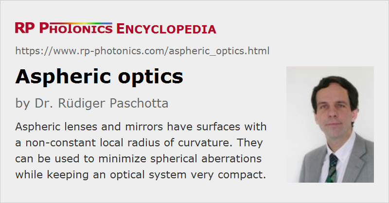

Aspheric Optics
Definition: optical elements with non-spherical surfaces
Alternative terms: aspherical optics, non-spherical optics
German: aspherische Optik
How to cite the article; suggest additional literature
Author: Dr. Rüdiger Paschotta
Most lenses and focusing or defocusing mirrors, as used in general optical instruments and in laser technology, have spherical optical surfaces – surfaces which have the shape of a sphere within some extended region. (They can be either convex or concave.) However, some optical elements are also available with non-spherical surfaces and are then called aspheric optics (or sometimes aspherical optics). They exhibit surface profiles which do not have a constant local radius of curvature – often with weaker curvature of parts which are more distant to the optical axis. In most cases, surface profiles are at least rotationally symmetric.
The purpose of using aspheric optics is usually to avoid spherical aberrations, as explained in more detail below.
When surfaces deviate more profoundly from spherical shapes, e.g. with oscillations, such components are called free-form optics.
Fabrication of Spherical and Aspherical Lenses
Spherical optical surfaces are typically not used because they were ideal concerning the optical function – usually they are not –, but only because they are most convenient to manufacture. The usually employed generation process naturally produces spherical surfaces. Note that it is not possible geometrically to obtain non-spherical surfaces with simple grinding; spherical surfaces are the only ones where one can transversely move around the grinding tool while maintaining full contact with the process surface.
Therefore, more refined manufacturing methods are required to produce aspherical optics. There are adapted grinding processes, also diamond turning techniques, which can work without the mentioned full contact between the work tool and the processed sample. Some of them involve the use of computer-controlled machines (CNC, robotic manufacturing).
In some cases (particularly for polymer-based optical elements, plastic optics), one simply uses molding forms with appropriate shapes, which by their nature do not need to be spherical. Such injection molding and also compression molding processes can be used for cheap mass production, but usually do not with a particularly high optical quality. There are also glass molding techniques with subsequent annealing, leading to higher quality but at higher cost.
A substantial variety of manufacturing techniques for aspheric optics has been developed in the last couple of decades. Some of them can also be applied to different kinds of mirrors. Some methods are suitable for generating arbitrary freeform surfaces. The choice of fabrication method can depend on various aspects:
- Some methods are applicable only to certain optical materials. For example, diamond turning works with polymers and metals, but not with glasses.
- Some methods are well suited for the flexible production of prototypes or small volumes, while others are more efficient for volume production.
- There are also trade-offs between production cost and optical quality.
Spherical and Other Aberrations
The essential function of focusing or defocusing optical elements is to cause a radially varying optical phase change. For example, for simple focusing of a laser beam with originally flat wavefronts one would ideally apply a phase change which has a quadratic component with radius (but no higher-order terms); this kind of radial dependence is approximated by an optical element with spherical shape, as long as one stays close to the beam axis. For more extreme positions, so-called spherical aberrations become relevant – particularly for lenses with high numerical aperture. Similar effects occur in imaging applications.
Optical elements and systems also produce other kinds of optical aberrations such as astigmatism and coma, which can lead to non-ideal performance of focusing or imaging devices. There are sophisticated optical design principles which allow one to minimize different kinds of aberrations of optical systems, even when using only spherical optical elements. However, the number of required optical elements and consequently the number of involved optical surfaces may be substantially increased compare with what would be required just to obtain the basic optical function.
Sag Equation
Traditionally, the exact shape of aspheric surfaces is described with the sag equation:
Here, z is the profile height as a function of the radial coordinate h (distance from the optical axis). K is the conic constant, which can be used to obtain certain typical shapes (which may be modified further with the additional terms):
- For K = 0, the formula describes a spherical surface with the inverse radius of curvature C.
- K = −1 results in a parabolic shape. This is appropriate, for example, for collimating a beam coming from a tight focus, or for tightly focusing a collimated beam. This is often used for parabolic mirrors, which however can also be made for off-axis operation, where the above equation could not be applied with h being the distance from the center of the mirror.
- K > −1 produces an ellipsoid, which can be useful for transferring light from one focus into another.
- K < −1 produces a hyperbola shape, e.g. for modifying the wavefront curvature of an already divergent beam.
Further modifications are possible with the coefficients K4 and higher; due to the high powers in h, they affect mostly the outer parts of the profile.
Advantages of Using Aspheric Optics
As aspheric optics allow one to avoid spherical and other aberrations in the first place, they can substantially simplify both the optical design process and the resulting optical designs. This can also lead to a more compact optical systems, which is particularly relevant e.g. for the design of mobile devices. For example, extremely compact camera objectives as required for smartphones must work with a minimum number of optical elements and therefore heavily depend on aspheric optics. The reduced number of optical surface may also be a relevant advantage. Besides, because of various complex trade-offs in optical design, by using aspheric elements one can often eliminate certain requirements and finally achieve overall better optical performance.
Other applications are in optical data storage, fiber optics (e.g. launching laser beams into fibers or fiber collimators) and optical space technology. Depending on the situation, the overall manufacturing cost may even be reduced, despite the higher cost of producing aspherical optical elements. For such reasons, modern software packages for optical design must have extended features concerning aspheric and general freeform optics. In fact, numerical methods are nowadays most often used for aspheric lens design.
Note that it is usually neither necessary nor advisable to use aspheric optics throughout in a system. Instead, it is often sufficient to use a single aspheric surface to obtain good control of various types of aberrations. Such a surface may either be close to spherical, but with some specific deviations, or it may not have an own focusing function, only compensating aberrations introduced by other elements (correction plates).
Frequently, aspheric lenses are made as plano-convex or plano-concave elements, i.e., with one side being flat.
There are also lenses which are at the same time aspheric and achromatic. For example, one can combine a spherical glass lens with a aspheric polymer part. There are even hybrid aspheres, combining refractive and refractive properties.
Off-the-shelf and Custom Aspherics
In some cases, it is sufficient to use standard aspheric lenses or mirrors as are available from various manufacturers on stock. However, aspheric lenses have a number of additional parameters (see above), making it substantially more difficult to find the required combination of properties in stock lenses. Mostly, this is possible only for lenses which are optimized for standard optical tasks such as collimating a strongly focused beam. In other cases, custom optics have to be used.
Some computer-controlled fabrication techniques are well suited for making custom aspherics. In some cases, components which are normally used in spherical form are subject additional treatment where they are turned into aspherics.
Metrology of Aspheric Optics
Note that there are technical challenges not only concerning the fabrication of aspheric surfaces, but also concerning optical metrology. One needs to measure not only simple quantities like focal lengths (i.e., assess radius errors), but also additional parameters of the sag equation (see above). Both the surface accuracy and surface roughness are of interest; the former tells how well an optical service matches the designed shape over larger areas, while roughness is a phenomenon on smaller scales. Different methods are used for quantifying such inaccuracies of optical elements.
In many cases, refined types of interferometers in combination with suitable computer software are used for such purposes. They allow for the precise assessment of the highest surface accuracies, far below 1 μm or a small fraction of the optical wavelength. Another option is to use 2D or 3D optical profilometers. The latter of are quite flexible method, but usually substantially lower accuracies than interferometry.
Cylindrical Optics
The same issues with aberrations also occur for cylindrical optics, focusing only in one direction. Therefore, instead of true cylindrical lenses, for example, one often uses lenses with a slightly acylindrical surface.
Suppliers
The RP Photonics Buyer's Guide contains 85 suppliers for aspheric optics. Among them:
Questions and Comments from Users
Here you can submit questions and comments. As far as they get accepted by the author, they will appear above this paragraph together with the author’s answer. The author will decide on acceptance based on certain criteria. Essentially, the issue must be of sufficiently broad interest.
Please do not enter personal data here; we would otherwise delete it soon. (See also our privacy declaration.) If you wish to receive personal feedback or consultancy from the author, please contact him e.g. via e-mail.
By submitting the information, you give your consent to the potential publication of your inputs on our website according to our rules. (If you later retract your consent, we will delete those inputs.) As your inputs are first reviewed by the author, they may be published with some delay.
See also: spherical aberrations, lenses, parabolic mirrors, achromatic optics, custom optics, paraxial approximation
and other articles in the category general optics
|  |
If you like this page, please share the link with your friends and colleagues, e.g. via social media:
These sharing buttons are implemented in a privacy-friendly way!